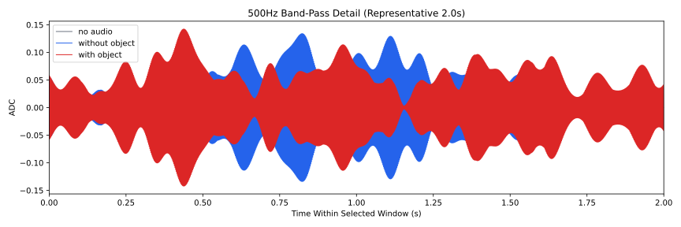
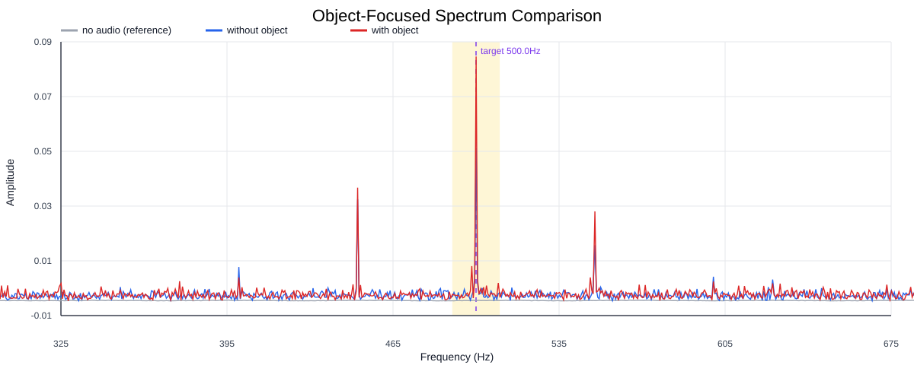
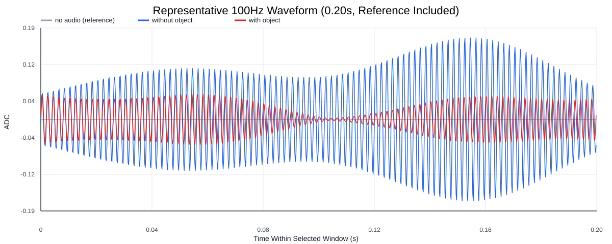
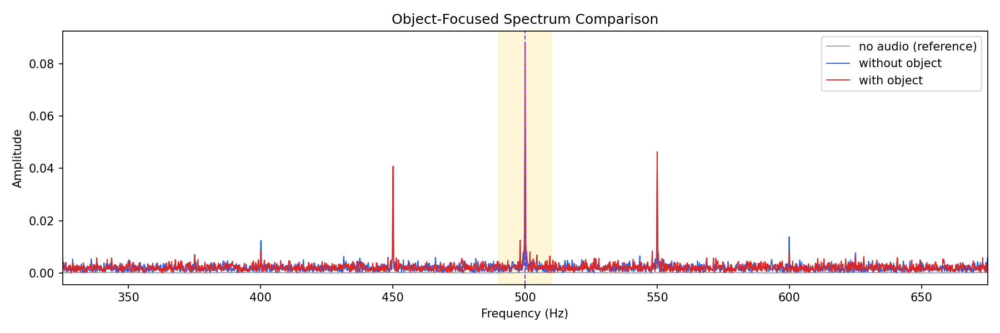
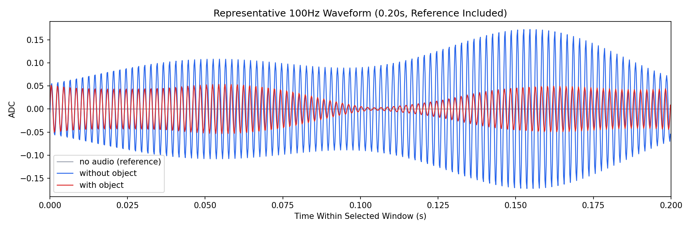

Background: F:\项目类文件夹\异物检测4.10\Data_Dual\frequency_sweep\0500Hz\repeat_04\raw\no_audio.csv
Without object: F:\项目类文件夹\异物检测4.10\Data_Dual\frequency_sweep\0500Hz\repeat_04\raw\without_object.csv
With object: F:\项目类文件夹\异物检测4.10\Data_Dual\frequency_sweep\0500Hz\repeat_04\raw\with_object.csv
| Metric | 无音频 | 100Hz无异物 | 100Hz有异物 | 无异物/无音频 | 有异物/无异物 | 有异物/无音频 |
|---|---|---|---|---|---|---|
| centered_rms | 0.018694 | 0.187342 | 0.243576 | 10.0215 | 1.3002 | 13.0296 |
| raw_target_amp | 0.000162 | 0.055300 | 0.088088 | 341.4763 | 1.5929 | 543.9433 |
| filtered_rms | 0.001739 | 0.047469 | 0.069551 | 27.2989 | 1.4652 | 39.9982 |
| filtered_target_amp | 0.000162 | 0.055300 | 0.088088 | 341.4763 | 1.5929 | 543.9433 |
| filtered_energy_ratio | 0.008652 | 0.064202 | 0.081534 | 7.4204 | 1.2700 | 9.4236 |
| window_filtered_target_amp_mean | 0.000758 | 0.059511 | 0.091628 | 78.5301 | 1.5397 | 120.9115 |
| window_filtered_target_amp_std | 0.002063 | 0.028787 | 0.033107 | 13.9555 | 1.1501 | 16.0499 |




